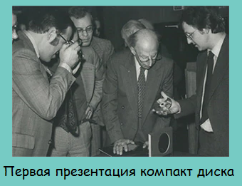
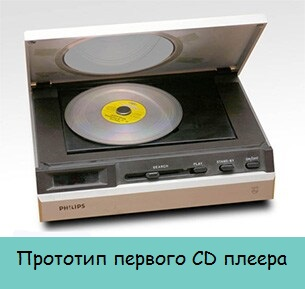
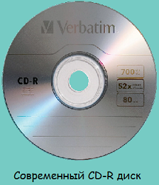

Технология лазерной записи информации на оптические диски появилась на свет задолго до рождения персональных компьютеров и разрабатывалась скорее для специальных музыкальных проигрывателей или для дополнительных телеустройств. Приоритет в разработке «лазерной» технологии принадлежит советским учёным Александру Прохорову и Николаю Басову — создателям «холодных» лазеров, которые стали основой различных устройств чтения информации (в 1964 году оба учёных были удостоены Нобелевской премии).
Однако на всемирном электротехническом конгрессе в 1977 году Вячеслав Васильевич Петров, ученый в области оптоэлектронного материаловедения, впервые в мире, за пять лет до появления первых компакт-дисков, предложил концепцию оптического диска как «единого носителя информации». Также он является главным конструктором первого накопителя информации ЕС5150 для ЭВМ со сменным оптическим диском ёмкостью 2500 Мбайт.
Идея использовать оптические устройства для записи и воспроизведения информации, как говорится, витала в воздухе. Первым, согласно другому источнику, способ воспроизводить данные с оптических дисков изобрёл в 1958 году американский электроинженер Дэйвид Грегг , запатентовавший его в 1961 году. Способ записи и воспроизведения, описанный в патенте Грегга, является, по сути, самой ранней формой DVD-дисков.
Другой американский изобретатель, Джеймс Рассел, считается первооткрывателем способа записи на оптическом носителе цифрового сигнала, который наносился на тонкую металлическую плёнку прожиганием с помощью мощной галогенной лампы.
Диски, получаемые по технологиям и Грегга, и Рассела, были гибкими и использовали прозрачный метод чтения, который имел массу недостатков. В 1969 году, в Голландии, физик-естествоиспытатель из исследовательской лаборатории компании «Philips» Питер Крамер изобрёл оптический видеодиск с рефлексивным методом чтения, — с подложкой, отражающей сфокусированный лазерный луч. По существу, именно изобретение Крамера стало стандартом для оптических дисков.
В Японии и США, до появления DVD-носителей, лидером по производству оптических видеодисков оставалась компания «Pioneer».Компания «Philips» организовала партнёрство с японской компанией «Sony», совместно с которой в 1979 году приступила к разработке аудиодиска. Существовавшим на тот момент магнитным носителям заметно не хватало объёма и надёжности хранения аудиозаписей. Результатом сотрудничества стало изобретение и промышленный выпуск в начале 1980-х аудио-дисков, ставших техническим прорывом в области хранения информации, — постепенное развитие этой технологии, с переходом с аналогового на цифровой способ кодировки, вскоре совершенно вытеснили магнитные носители.
В происшедшем развитии технологии производства оптических дисков различают так называемые генерации или поколения, основным признаком которых служит объём информации, доступный для хранения на одном диске, от поколения к поколению увеличивавшийся в разы. Увеличить объём и улучшить прочие существенные характеристики позволяли новые способы лазерной записи, использующие всё более тонкие материалы.